I’m a software engineer currently contracting with
Arpio. My
work sits between engineering, product, and
design, with close attention to how a product feels and the problem it solves. I
graduated from UC Davis in June 2026 with a degree in Computer Science.
I’ve always been talkative and socially driven. My parents love to tell the story of me at
one of my brother’s swim classes. Ten minutes in, they lost track of me. After a few minutes
of panicked searching, they eventually found me talking to kids I had never met, Hot Wheels
in hand. That instinct to connect with people has stayed with me ever since.
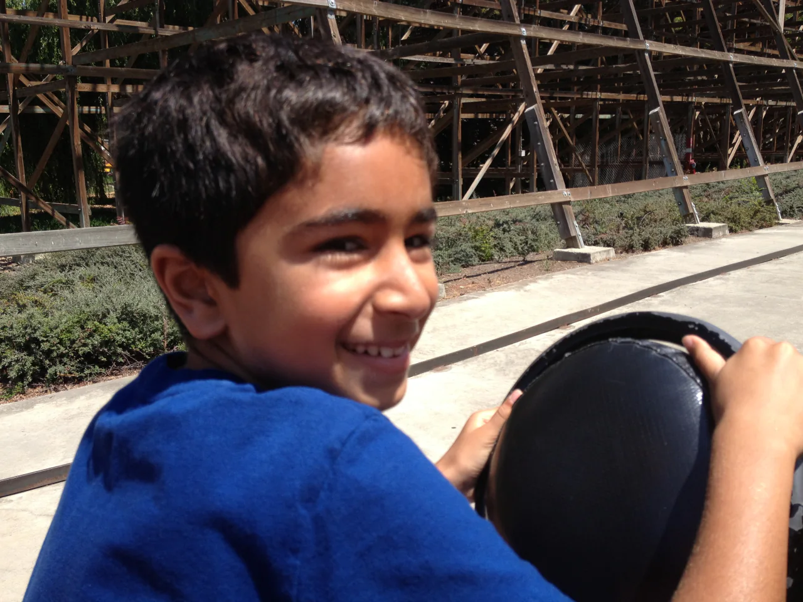
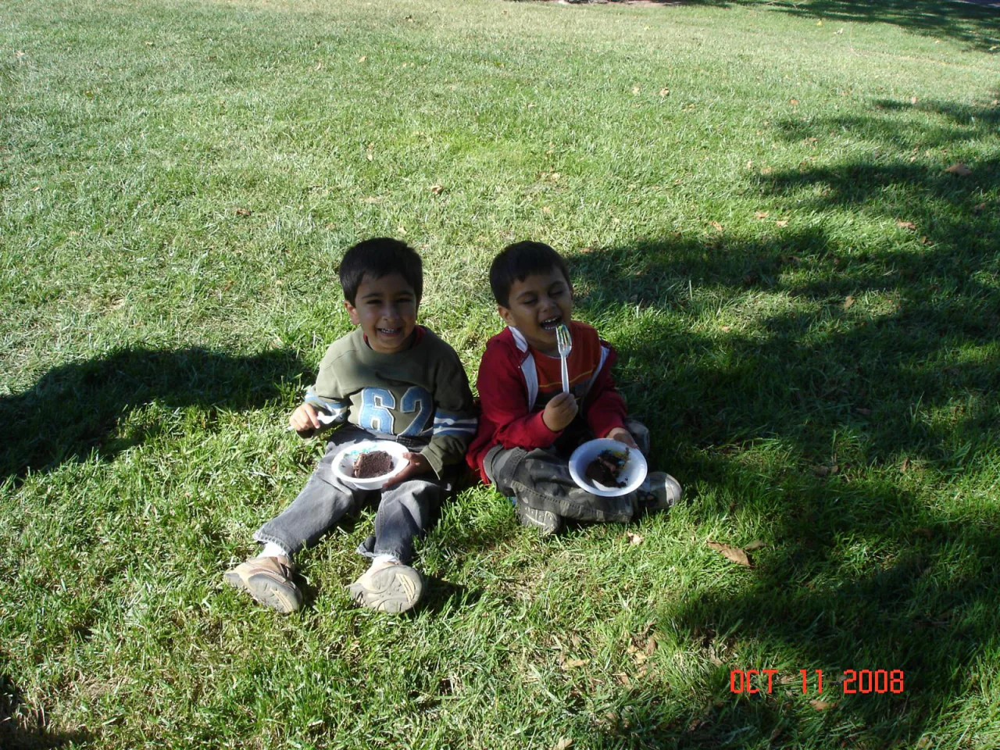
In high school, I put that energy wherever I could: student council, mock trial, DECA,
film club, and Boy Scouts. Serving as class senator for three years was my first
fulfilling leadership experience. Years later, when I found myself leading a much larger
student organization, that part felt familiar.
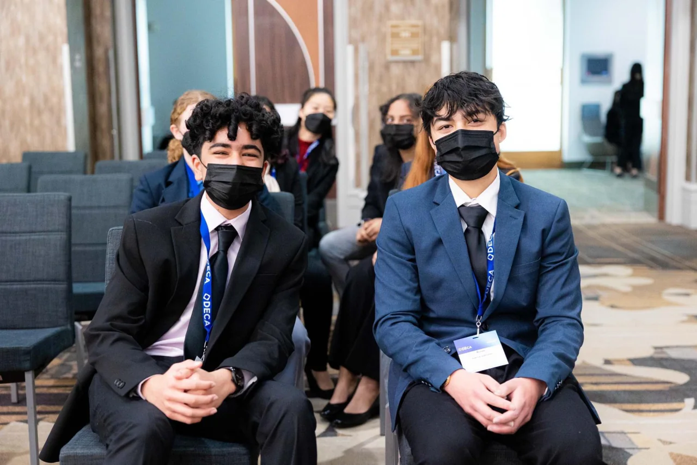
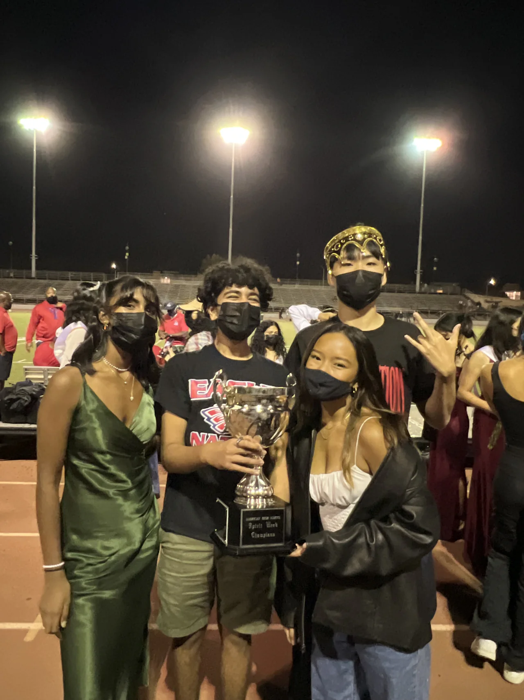
After graduating high school, I entered UC Davis as an Economics major because I was
interested in human behavior. I liked the questions it asked, but the emphasis on
theory felt removed from the people behind them. I wanted a way to stay close to those
people and make something in response to what I learned.
Product management gave me that. I joined AggieWorks, a student-run tech organization at
UC Davis, as a Product Manager and switched my major to Cognitive Science. I was still
thinking about behavior, but now I could connect it to a real product, a real decision,
and eventually a real person using what we made.
But the closer I got to building, the more I wanted to understand the technical work
itself. That summer, I worked as a software engineer at Yantra (acq. by Riveron),
building supply-chain dashboards for a few of their clients.
By my second year, I had gone all in on RoomU (roommate-matching app) and switched to
Computer Science. We launched the product and put it in front of real users. We listened
to them and kept iterating on the product in response. I started to understand how
important the user voice was in engineering and product decisions.
In my third year, I became VP of Product and handed RoomU to other members. My attention
moved from refining one product to thinking about how the whole organization learned to
build. I wanted every team to make more considered product decisions and ship more
refined products.
I cared about the quality of what we shipped, but the people building it mattered just
as much. AggieWorks had given me room to learn, and I wanted other students to have that
room too.
As President, I focused more directly on the experience of the people inside AggieWorks.
We invested in socials, retreats, and professional-development sessions alongside the
internal work that kept the organization running. I also helped new products move from
0 to 1 while helping established products gain traction through data-driven product
decisions and growth marketing initiatives.
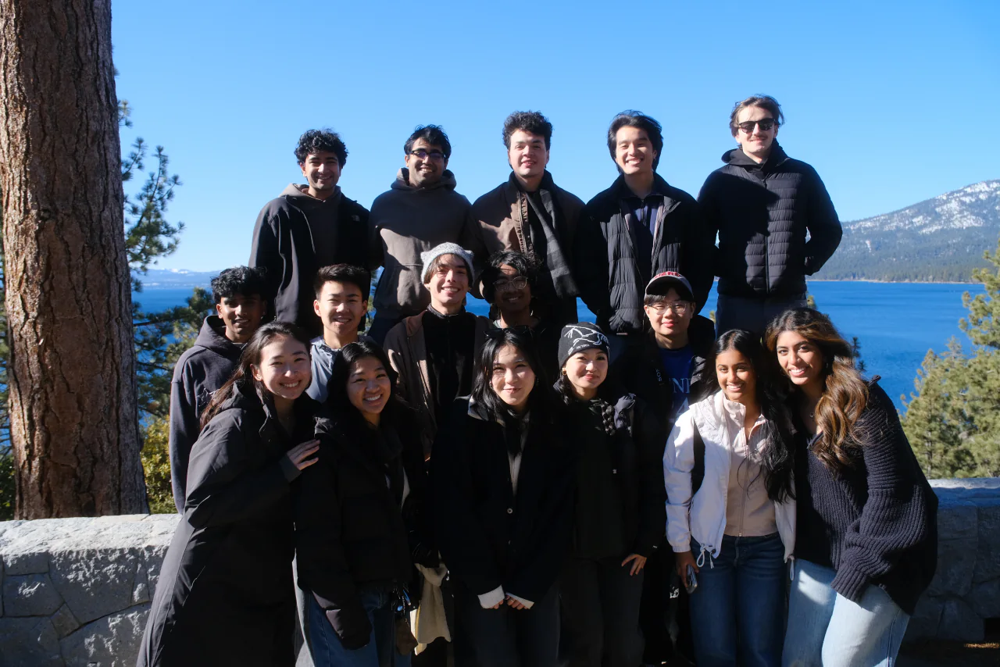
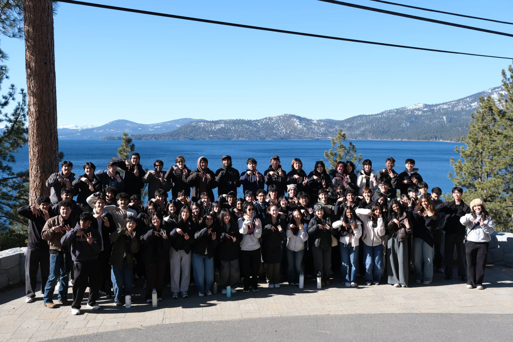
Seeing other members find ownership and fulfillment in their work became more gratifying
than succeeding on my own. It widened my idea of what it meant to build something.
We also created larger spaces for the community around us. The UC Davis Tech Mixer
brought together more than 500 students across 35 clubs, while ProdCon brought in more
than 100 competitors and eight industry speakers. When one of our products hit PostHog’s
rate limit, I cold emailed them because we were trying to avoid paying for the service.
They responded by giving us access to their startup plan. That conversation grew into a
partnership and PostHog’s first university event. A few months later, they used the same
playbook for their first student ambassador program.
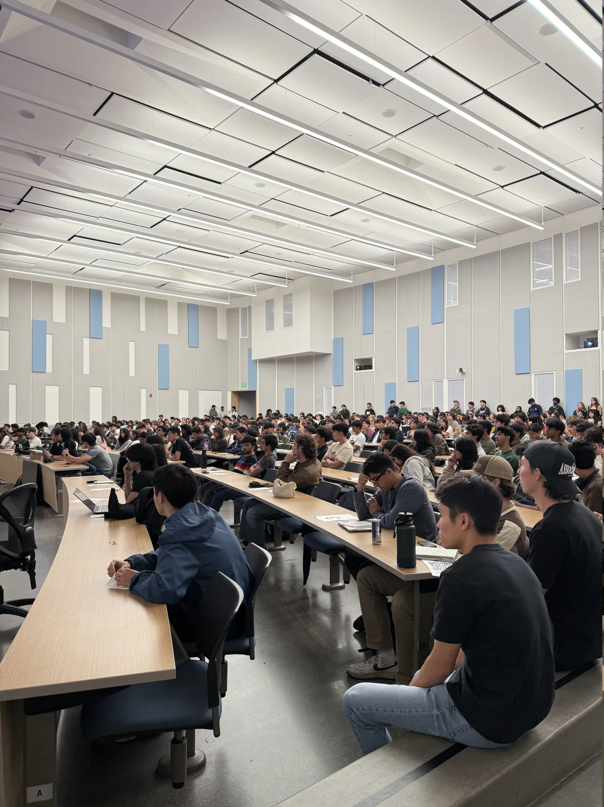
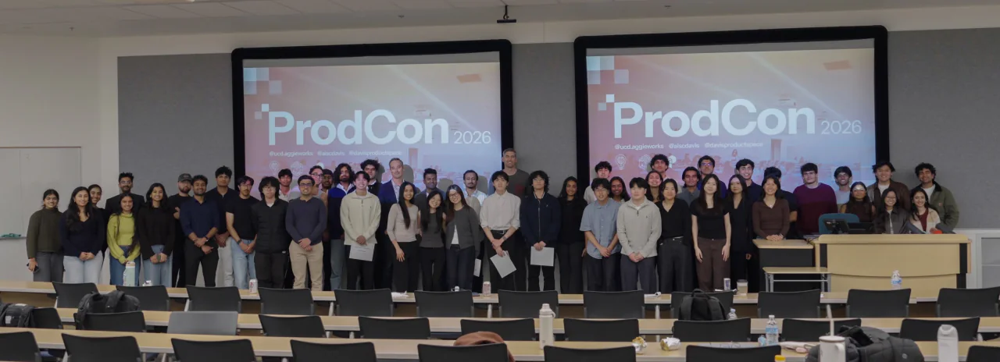
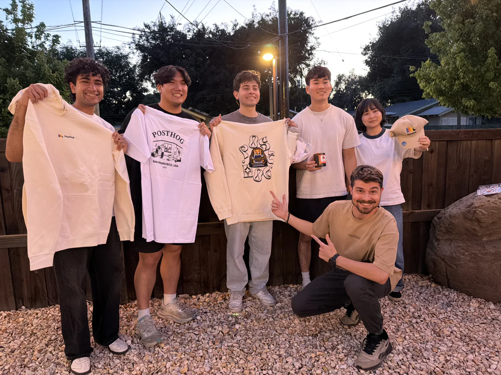
What drew me to spend my next two summers at Arpio was how real the problem felt. Their
product helps businesses make their cloud infrastructure resilient. We built fast and
took real ownership. I saw our impact firsthand as software I built generated leads and
helped prospects become clients. This also
introduced a new set of constraints. Downtime, competing priorities, and code quality
could carry immediate consequences in an enterprise setting. My experience made me
more deliberate about what needed to work now and what we could improve. Making those
decisions showed me that I was most fulfilled in engineering, where I could carry an
idea all the way into working software.
For a long time, I thought software had to feel perfect before it launched. Now, I think
a product needs core functionality that solves a real problem that people are actually
experiencing. The best way to know if it does is to put it in front of them, listen, and
iterate. Their voice belongs inside the engineering and product process. The craft is
in making sense of what we see, then deciding what to improve.
Along the way, my definition of building widened. It includes writing code, but it also
includes listening carefully, choosing what matters, and creating an environment where
other people can do good work.
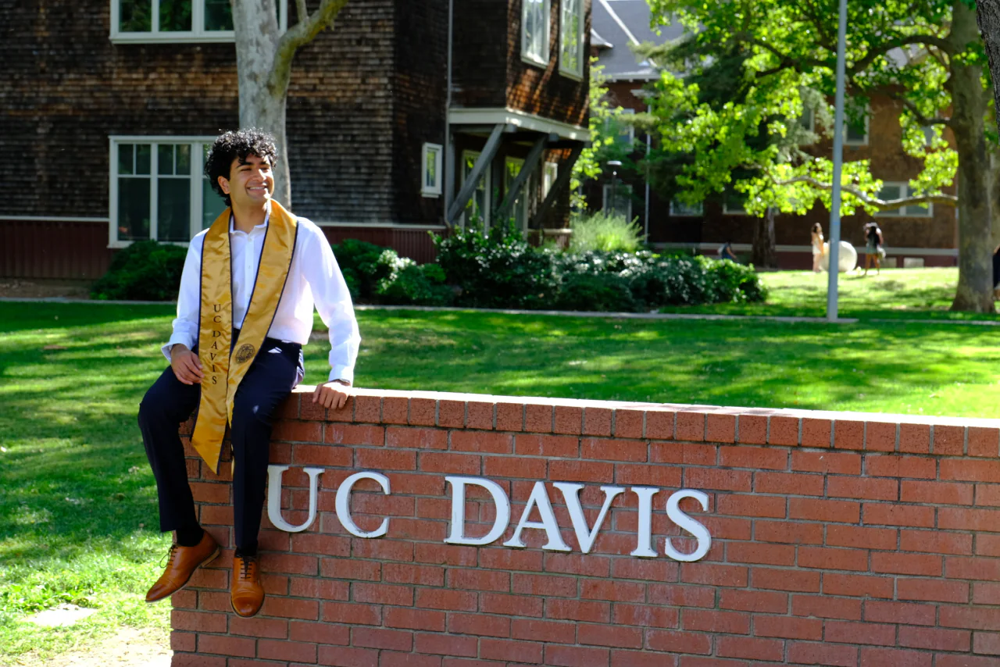
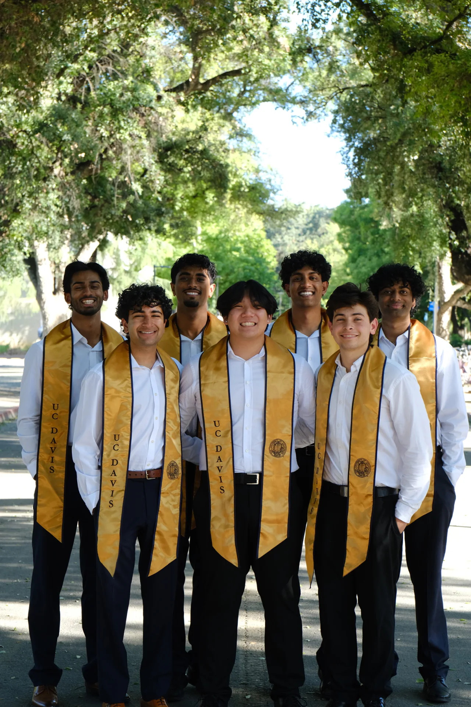
That wider definition has also clarified what I want from the work ahead. I want to own a
meaningful part of what reaches people and understand the systems underneath it well
enough to build thoughtfully.